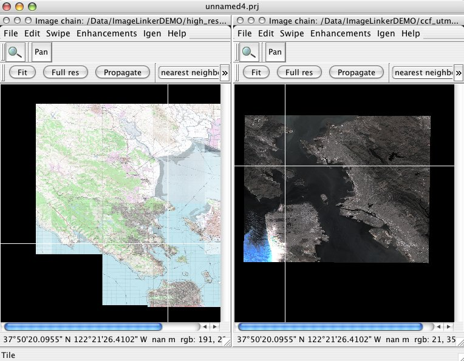

OSSIM¶
Image Processing¶
Open Source Software Image Map (OSSIM) is a high performance engine for remote sensing, image processing, geographical information system and photogrammetry.
OSSIM has been funded by several US government agencies in the intelligence and defense community and the technology is currently deployed in research and operational sites. It has been actively developed since 1996.
Designed as a series of high performance software libraries, it is written in C++ employing the latest techniques in object-oriented software design. Many command line utilities, GUI applications, and integrated systems have been implemented - several of which are included with the software distribution.
{kind=link}
Core Features¶
- Parallel processing capabilites with mpi libraries
- Rigorous sensor modeling
- Universal Sensor Models (RPCs)
- Wide range of Map Projections and Datums supported
- Non-destructive, parameter based image chains
- Native file access
- Precision Terrain correction and ortho-rectification
- Advanced Mosaicing, compositing and fusions
- Elevation support
- Vector and shapelib support
- Projection and resolution independent
- Equation editors
Details¶
Website: http://www.ossim.org
Licence: GNU General Public License (GPL) version 3
Software Version: 2.2.2
Supported Platforms: Linux, Mac, Windows
API Interfaces: C++
Commercial Support: http://www.osgeo.org/search_profile